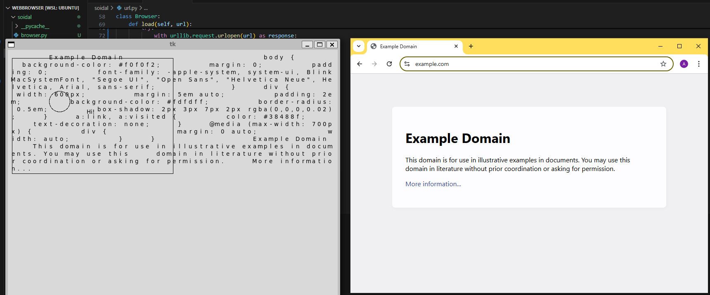

Once upon a time, in a lecture hall, my professor posed a question: "What happens when you type a URL into your browser?" At that moment, I realized I had no idea.......Only later did I realize how complex and abstracted modern day browsers really are.
I set out to create a basic browser from scratch, with only one goal in mind: to understand the steps a modern browser takes to fetch and display a webpage.
When we type a URL like www.example.com, our browser first needs to locate the "address" of the site. In the background, my browser sends out a call to find the site's IP address.
This is the DNS Lookup step, where the hostname (like example.com) gets translated into an IP address (like 93.184.216.34) so that our computer knows where to send the request.In the code below the DNS
lookup is done implictly before we even connect in the line s.connect((self.host, self.port)).
def request(self):
s = socket.socket(
family=socket.AF_INET,
type=socket.SOCK_STREAM,
proto=socket.IPPROTO_TCP,
)
s.connect((self.host, self.port))
request = "GET {} HTTP/1.0\r\n".format(self.path)
request += "Host: {}\r\n".format(self.host)
request += "\r\n"
s.send(request.encode('utf-8'))
response = s.makefile('r', encoding='utf-8', newline='\r\n')
statusline = response.readline()
version, status, explanation = statusline.split(' ', 2)
response_headers = {}
while True:
line = response.readline()
if line == '\r\n':
break
header, value = line.split(':', 1)
response_headers[header.lower()] = value.strip()
assert "transfer-encoding" not in response_headers
assert "content-encoding" not in response_headers
content = response.read()
s.close()
return content
Now that we know where to go, my browser starts reaching out to the server. It establishes a TCP handshake— The three-way handshake (SYN, SYN-ACK, ACK) means both my browser and the server agree to "talk" and send data back and forth. This makes the connection reliable, so the data isn’t lost or jumbled in transit. request = "GET {} HTTP/1.0\r\n".format(self.path) and s.send(request.encode('utf-8')) create and send the HTTP request itself. It’s not part of DNS resolution or TCP connection but is the actual HTTP GET request sent over the established TCP connection. s.makefile('r', encoding='utf-8', newline='\r\n') wrap the socket in a file-like object to read the server’s response, making it easier to process.
With the connection established, my browser sends an HTTP GET request to ask the server for the content of the page. This is like saying, "Please give me the information for example.com!"
The server responds with the requested page’s HTML content, which my browser then receives, processes, and displays. Although my browser doesn’t support styling or JavaScript, it accomplishes the core task: fetching and displaying the raw content from a server.
Although modern browsers handle countless additional tasks, creating this simple version helped me understand the essentials: DNS lookup, TCP handshake, HTTP request, and response display. Every URL entry in a browser is a journey, from converting the hostname to connecting, requesting, and finally displaying the content. Below is a side by side comparision, now is it exactly the same? No. But id like to say I came out a better programmer.
